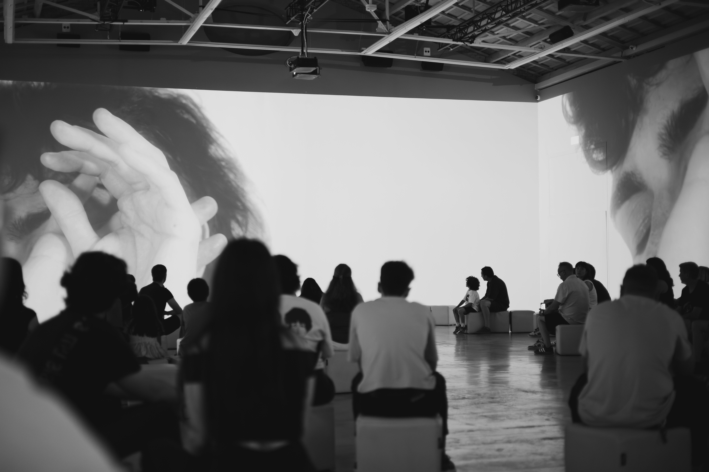

Col·lapse
Artwork Description
Col·lapse inhabits the instant in which a new possible order emerges: not as closure, but as continuous opening where everything is built from transformation. Matter ceases to be fragment and becomes system: vibrations that recognize one another, echoes that answer each other, forces that begin to align. What is born as dissonance finds its own logic in the constant interaction between light, sound, and presence. Space reconfigures itself in real time, oscillating between balance and rupture, between control and drift.
Archivo Cero is an interdisciplinary collective based in Valencia that develops immersive experiences where digital art, interactive systems, light, sound, and real-time visuals converge. Their practice sits at the crossroads of technology and perception, creating sensitive environments where the image responds, space vibrates, and the audience becomes an active part of the work. The collective combines a solid technical foundation with an artistic vision focused on movement, rhythm, and emotion. Their projects explore the relationship between mathematics, organic behavior, physical inputs, and audiovisual composition, translating data, gestures, and signals into living, changing experiences. Constant experimentation with new technologies drives their creative research, understanding each project as a space for play, discovery, and evolution between digital precision and poetic intuition.